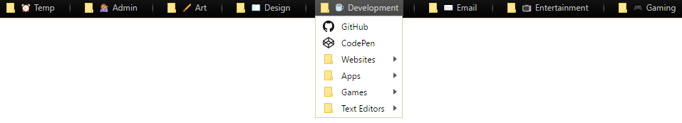

Bookmark Management
How to efficiently use your bookmarks bar.
Why do we use bookmarks?
Let's face it most developers are compulsive website hoarders. The top of their web browser is overflowing with links to helpful resources and tools in the form of bookmarks. These bookmarks generally reflect our interests, how we spend time perusing the web and how we solve problems. They're effective time savers that prevent us from having to scour our browsing history to locate that awesome website with a name you vaguely remember; a website that only exists in the dark void beyond the first page of a Google Search. For these reasons it is important to catalogue and order the bookmarks bar in way that enhances its utility and, as a result, improves your daily productivity.
Getting organised
It is good practice to catalogue bookmarks into relevant folders for quick reference. To achieve this each bookmark must first be aptly named to reference either the website or it's primary function. By default new bookmark names are assigned as the title of a webpage which usually consists of the website's name and slogan or summary. This consumes an excessive amount of space and should be reduced for readability. Once the bookmarks have been renamed, organise them into generic folders such as: “Social Media”, “Entertainment”, “Development”, “Design” and so on. Depending on the number of bookmarks in a single category it may be necessary to create more specific sub-folders, for instance: “CSS”, “HTML” and “Javascript”. You may only need to use a bookmark for a day or two so it is worthwhile creating a temporary folder (“Temp”) to accommodate these instances. After everything is neatly grouped the folders should be rearranged into a meaningful order. Personally, I prefer an alphabetical structure (A-Z), however, it may be better to order the folders based on priority (most to least used). Your bookmarks should now resemble an orderly file cabinet that can be shared across all of your devices. 
Synchronising
Sharing your bookmarks across your devices is as simple as navigating to your browser settings or options, signing into your account and synchronising. To share them with your peers or create a backup, locate the bookmark manager and export to a HTML file. This feature is less apparent on Chrome but can be accessed by clicking on the “Organise” drop-down button. By this point your bookmarks should be concisely displayed on all your devices. You can choose to leave it at that, or, you can make a few cosmetic additions.
Bells and whistles
Suppose you have many folders and some are being pushed into a dropdown selection on the righthand side of the bookmarks bar, unicode characters can address this issue. Unicode characters can be used like icons to depict the category, acting as a good substitution for plain text. For example the cliché coffee cup ☕ perfectly signifies the “Development” folder and likewise the clock ⏰ for the "Temp" folder. Lastly, if you require a bit more space between folders then this website's favicon can be used as a separator by bookmarking it as many times as required.